3. Annexes
3.1. Construire un projet web avec Visual Studio.net sur XP familial
Visual Studio.net permet de construire différents types de projets :

Pour construire un projet d'application web, on choisit normalement le type [Application Web ASP.NET]. Ce type de projet nécessite la présence d'un serveur web IIS local ou distant. Si on travaille sur une machine Windows XP, ce serveur n'existe pas et il n'est pas possible de l'installer. On ne peut donc créer de projet de type [Application Web ASP.NET].
On peut contourner l'obstacle en acceptant quelques inconvénients mineurs. Il suffit :
- d'utiliser le serveur web Cassini en lieu et place du serveur IIS. Il est disponible librement sur le site de Microsoft.
- d'utiliser un projet [Bibliothèque de classes] en lieu et place du projet [Application Web ASP.NET]
Créons un projet simple qui montre comment procéder.
- créer un projet [Bibliothèque de classes]
 |  |
- supprimer [Class1.vb]

- ajouter un nouvel élément au projet, de type [Fichier texte] et l'appeler [demo.aspx] :
 |  |
- le fichier [demo.aspx] est reconnu comme une page web et un éditeur de page lui est associé. Celui-ci a deux panneaux :
- [design] pour construire graphiquement la page
- [HTML] pour avoir accès au code HTML de la page

- faire [Affichage/Code] pour faire afficher la partie code VB de la page. Rien ne se passe. On n'a pas accès au code VB de la page.
- aller dans le panneau [HTML] et inscrire le code qui va relier la page [demo.aspx] au code [demo.aspx.vb] :
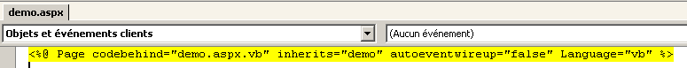
- demander à voir le code de contrôle associé à la page par [Affichage code - F7]. On obtient le fichier [demo.aspx.vb] :
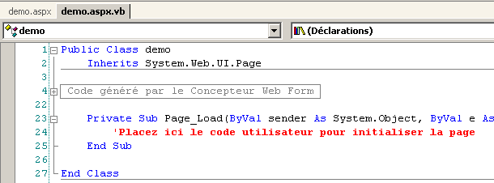
- la page [demo.aspx] est désormais reconnue comme une page web [.aspx] avec un code [.aspx.vb] associé.
- revenons sur le panneau [Design] de [demo.aspx] et dessinons la page suivante :
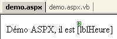
La page contient du texte et un composant serveur de type [Label] d'identifiant [lblHeure].
- passons dans le panneau [HTML]. On y trouve le code suivant :
<%@ Page codebehind="demo.aspx.vb" inherits="demo.demo" autoeventwireup="false" Language="vb" %>
Démo ASPX, il est
<asp:Label id="lblHeure" runat="server"></asp:Label>
Ce code est incomplet d'un point de vue syntaxe HTML. Complétons-le :
<%@ Page codebehind="demo.aspx.vb" inherits="demo.demo" autoeventwireup="false" Language="vb" %>
<html>
<head>
<title>démo ASPX</title></head>
<body>
Démo ASPX, il est
<asp:Label id="lblHeure" runat="server"></asp:Label>
</body>
</html>
- passons dans le code [demo.aspx.vb] pour y écrire le code de contrôle qui mettra l'heure dans le composant [lblHeure]. On constate que celui-ci n'est pas reconnu par Intellisense, l'outil d'aide à l'écriture de code.
- fermer [demo.aspx] et [demo.aspx.vb] en les sauvegardant auparavant puis les rouvrir. Passer dans le code [demo.aspx.vb]. Cette fois-ci le composant [lblHeure] de [demo.aspx] est bien reconnu par Intellisense dans le code [demo.aspx.vb]. Compléter le code :

- générer le projet par [Générer/Générer demo]. Si la génération se passe correctement, la DLL est alors générée dans le dossier [bin] du projet :

- Nous sommes prêts pour les tests. Nous configurons le serveur Cassini (cg paragraphe suivant) de la façon suivante :

La cible du raccourci vers Cassini est définie comme suit :
"E:\Program Files\Microsoft ASP.NET Web Matrix\v0.6.812\WebServer.exe" /path:"D:\temp\07-04-05\demo" /vpath:"/demo"
le chemin de l'exécutable | |
le chemin du dossier du projet web Visual Studio | |
le chemin virtuel associé |
- lancer Cassini. Son icône s'installe dans la barre des tâches. Cliquer droit dessus et prendre l'option [Show details] pour vérifier la correcte configuration du serveur web :

- avec un navigateur, demandons la page que nous avons construite, en demandant l'URL [http://localhost/demo/demo.aspx]. Nous obtenons le résultat suivant :
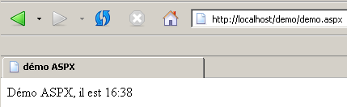
Nous avons réussi à créer une application web sous Visual Studio en utilisant :
- un projet de type [bibliothèque de classes]
- le serveur web Cassini
Nous savons maintenant construire des applications web sur des postes ne disposant pas du serveur IIS, comme c'est le cas des postes windows XP, édition familiale.
3.2. Où trouver le serveur web Cassini ?
Pour travailler avec la plate-forme .NET de Microsoft, on peut utiliser le serveur web Cassini. Celui-ci est disponible via un produit appelé [WebMatrix] qui est un environnement gratuit de développement web sur les plate-formes .NET disponible à l'URL :

On suivra attentivement la démarche d'installation du produit :
- télécharger et installer la plate-forme .NET (1.1 en mars 2004)
- télécharger et installer WebMatrix
- télécharger et installer MSDE (Microsoft Data Engine) qui est une version limitée de SQL Server.
Une fois l'installation terminée, le produit [WebMatrix] est disponible dans les programmes installés :

Le lien [ASP.NET] Web Matrix lance l'IDE de développement ASP.NET :

Le lien [Class Browser] lance un outil d'exploration des classes .NET :

Pour tester l'installation, lançons [WebMatrix] :
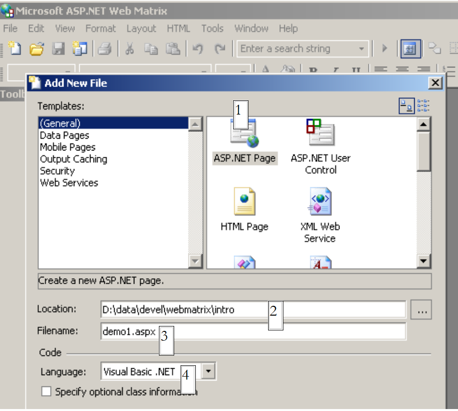 |
Lors du démarrage initial, [WebMatrix] demande les caractéristiques du nouveau projet.C'est sa configuration par défaut. On peut le configurer pour qu'il ne fasse pas apparaître cette boîte de dialogue au démarrage. On l'obtient alors par l'otion [File/New File]. [WebMatrix] permet de construire des squelettes pour différentes applications web. Ci-dessus, nous avons précisé avec (1) que nous voulions construire une application [ASP.ET Page] qui est une page Web. Avec (2), nous précisons le dossier dans lequel sera placée cette page Web. Dans (3) nous donnons le nom de la page. Elle doit avoir le suffixe .aspx. Enfin dans (4), nous précisons que nous voulons travailler avec le langage VB.NET, [WebMatrix] supportant par ailleurs les langages C# et J#. Ceci fait, [WebMatrix] affiche une page d'édition du fichier [demo1.aspx]. Nous y plaçons le code suivant :

- l'onglet [Design] permet de "dessiner" la page web que l'on veut construire. Cela se passe comme avec un IDE de construction d'applications windows.
- la conception graphique de la page Web dans [Design] va générer du code HTML dans l'onglet [HTML]
- la page Web peut contenir des contrôles générant des événements auxquels il faut réagir, un bouton par exemple. Ces événements seront gérés par du code VB.NET qui sera placé dans l'onglet [Code]
- au final, le fichier demo1.aspx est un fichier texte mélangeant code HTML et code VB.NET, résultat de la conception graphique faite dans [Design], du code HTML qu'on a pu ajouter à la main dans [HTML] et du code VB.NET placé dans [Code]. La totalité du fichier est disponible dans l'onglet [All].
- un développeur ASP.ET expérimenté peut construire le fichier demo1.aspx directement avec un éditeur de texte sans l'aide d'aucun IDE.
Sélectionnons l'option [All] On constate que [WebMatrix] a déjà généré du code :
<%@ Page Language="VB" %>
<script runat="server">
' Insert page code here
'
</script>
<html>
<head>
</head>
<body>
<form runat="server">
<!-- Insert content here -->
</form>
</body>
</html>
Nous n'allons pas essayer ici d'expliquer ce code. Nous le transformons de la façon suivante :
<html>
<head>
<title>Démo asp.net </title>
</head>
<body>
Il est <% =Date.Now.ToString("hh:mm:ss") %>
</body>
</html>
Le code ci-dessus est un mélange de HTML et de code VB.NET. Celui-ci a été placé dans les balises <% ... %>. Pour exécuter ce code, nous utilisons l'option [View/Start]. [WebMatrix] lance alors le serveur Web Cassini s'il n'est pas déjà lancé

On peut accepter les valeurs par défaut proposées dans cette boîte de dialogue et choisir l'option [Start]. Le serveur Web est alors actif. [WebMatrix] va alors lancer le navigateur par défaut de la machine sur laquelle il se trouve et demander l'URL http://localhost:8080/demo1.aspx :

Il est possible d'utiliser le serveur Cassini en-dehors de [WebMatrix]. L'exécutable du serveur se trouve dans <WebMatrix>\<version>\WebServer.exe où <WebMatrix> est le répertoire d'installation de [WebMatrix] et <version> son n° de version :

Ouvrons une fenêtre Dos et positionnons-nous dans le dossier du serveur Cassini :
E:\Program Files\Microsoft ASP.NET Web Matrix\v0.6.812>dir
...
29/05/2003 11:00 53 248 WebServer.exe
...
Lançons [WebServer.exe] sans paramètres :
Nous obtenons une fenêtre d'aide :

L'application [WebServer] appelée également serveur web Cassini admet trois paramètres :
- /port : n° de port du service web. Peut-être quelconque. A par défaut la valeur 80
- /path : chemin physique d'un dossier du disque
- /vpath : dossier virtuel associé au dossier physique précédent. On prêtera attention au fait que la syntaxe n'est pas /path=chemin mais /vpath:chemin, contrairement à ce que dit l'exemple [Example] du panneau d'aide ci-dessus.
Plaçons le fichier [demo1.aspx] dans le dossier suivant :

Associons au dossier physique [d:\data\devel\webmatrix] le dossier virtuel [/webmatrix]. Le serveur web pourrait être lancé de la façons suivante :
E:\Program Files\Microsoft ASP.NET Web Matrix\v0.6.812>webserver /port:100 /path:"d:\data\devel\webmatrix" /vpath:"/webmatrix"
Le serveur Cassini est alors actif et son icône apparaît dans la barre des tâches. Si on double-clique dessus :
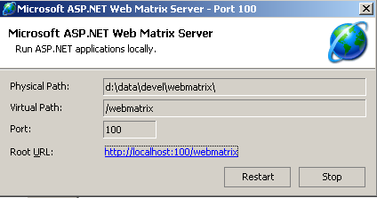
On retrouve les paramètres de lancement du serveur. On dispose également de la possibilité d'arrêter [Stop] ou de relancer [Restart] le serveur web. Si on clique sur le lien [Root URL], on obtient la racine de l'arborescence web du serveur dans un navigateur :

Suivons le lien [demos] :

puis le lien [demo1.aspx] :

On voit donc que si le dossier physique P=[d:\data\devel\webmatrix] a été associé au dossier virtuel V=[/webmatrix] et que le serveur travaille sur le port 100, la page web [demo1.aspx] se trouvant physiquement dans [P\demos] sera accessible localement via l'URL [http://localhost:100/V/demos/demo1.aspx].
Afin de ne pas être obligé de passer par une fenêtre DOS pour lancer le serveur Cassini, on pourra créer un raccourci vers l'exécutable du serveur avec des propriétés analogues aux suivantes :
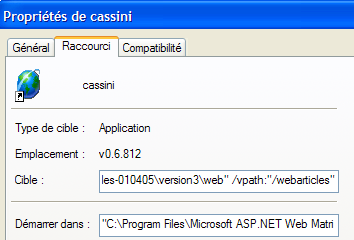
"C:\Program Files\Microsoft ASP.NET Web Matrix\v0.6.812\WebServer.exe" /port:80 /path:"D:\data\serge\travail\2004-2005\aspnet\webarticles-010405\version3\web" /vpath:"/webarticles" | |
"C:\Program Files\Microsoft ASP.NET Web Matrix\v0.6.812" |
3.3. Où trouver Spring ?
Le site principal de Spring est [http://www.springframework.org/]. C'est le site de la version Java. La version .NET en cours de développement (avril 2005) est à l'url [http://www.springframework.net/].

Le site de téléchargement est chez [SourceForge] :
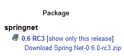
Une fois le zip ci-dessus récupéré, le décompresser :

Dans ce document, nous n'avons utilisé que le contenu du dossier [bin] :

Dans un projets Visual Studio utisant Spring, il faut faire systématiquement deux choses :
- mettre les fichiers ci-dessus dans le dossier [bin] du projet
- ajouter au projet une référence à l'assembly [Spring.Core.dll]
3.4. Où trouver Nunit ?
Le site principal de Nunit est [http://www.nunit.org/]. La version disponible en avril 2005 est la 2.2.0 :

Téléchargez cette version et installez la. L'installation crée un dossier où on trouvera la version graphique de test :
Ce qui est intéressant se trouve dans le dossier [bin] :
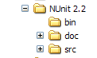

La flèche ci-dessus désigne l'utilitaire graphique de test. L'installation a également ajouté de nouveaux éléments au référentiel d'assemblages de Visual Studio que nous allons découvrir maintenant.
Créons le projet Visual Studio suivant :

La classe testée est dans [Personne.vb] :
Public Class Personne
' champs privés
Private _nom As String
Private _age As Integer
' constructeur par défaut
Public Sub New()
End Sub
' propriétés associées aux champs privés
Public Property nom() As String
Get
Return _nom
End Get
Set(ByVal Value As String)
_nom = Value
End Set
End Property
Public Property age() As Integer
Get
Return _age
End Get
Set(ByVal Value As Integer)
_age = Value
End Set
End Property
' chaîne d'identité
Public Overrides Function tostring() As String
Return String.Format("[{0},{1}]", nom, age)
End Function
' méthode init
Public Sub init()
Console.WriteLine("init personne {0}", Me.ToString)
End Sub
' méthode close
Public Sub close()
Console.WriteLine("destroy personne {0}", Me.ToString)
End Sub
End Class
La classe de test est dans [NunitTestPersonne-1.vb] :
Imports System
Imports NUnit.Framework
<TestFixture()> _
Public Class NunitTestPersonne
' objet testé
Private personne1 As Personne
<SetUp()> _
Public Sub init()
' on crée une instance de Personne
personne1 = New Personne
' log
Console.WriteLine("setup test")
End Sub
<Test()> _
Public Sub demo()
' log écran
Console.WriteLine("début test")
' init personne1
With personne1
.nom = "paul"
.age = 10
End With
' tests
Assert.AreEqual("paul", personne1.nom)
Assert.AreEqual(10, personne1.age)
' log écran
Console.WriteLine("fin test")
End Sub
<TearDown()> _
Public Sub destroy()
' suivi
Console.WriteLine("teardown test")
End Sub
End Class
Plusieurs choses sont à noter :
- les méthodes sont dotées d'attributs tels <Setup()>, <TearDown()>, ...
- pour que ces attributs soient reconnus, il faut que :
- le projet référence l'assembly [nunit.framework.dll]
- la classe de test importe l'espace de noms [NUnit.Framework]
La référence est obtenue en cliquant droit sur [References] dans l'explorateur de solutions :
 | 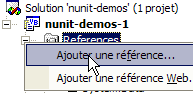 |

L'assembly [nunit.framework.dll] doit être dans la liste proposée si l'installation de [Nunit] s'est bien passée. Il suffit de double-cliquer sur l'assembly pour l'ajouter au projet :

Ceci fait, la classe de test [NunitTestPersonne] doit importer l'espace de noms [NUnit.Framework] :
Les attributs de la classe de test [NunitTestPersonne] doivent alors être reconnus.
- l'attribut <Test()> désigne une méthode à tester
- l'attribut <Setup()> désigne la méthode à exécuter avant chaque méthode testée
- l'attribut <TearDown()> désigne la méthode à exécuter après chaque méthode testée
- la méthode Assert.AreEqual permet de tester l'égalité de deux entités.Il existe de nombreuses autres méthodes de type Assert.xx.
- l'utilitaire NUnit arrête l'exécution d'une méthode testée dès qu'une méthode [Assert] échoue et affiche un message d'erreur. Sinon il affiche un message de réussite.
Configurons notre projet pour qu'il génère une DLL :

La DLL générée s'appellera [nunit-demos-1.dll] et sera placée par défaut dans le dossier [bin] du projet. Générons notre projet. Nous obtenons dans le dossier [bin] :

Lançons maintenant l'utilitaire de test graphique Nunit. Rappelons qu'il se trouve dans <Nunit>\bin et qu'il s'appelle [nunit-gui.exe]. <Nunit> désigne le dossier d'installation de [Nunit]. On obtient l'interface suivante :

Utilisons l'option de menu [File/Open] pour charger la DLL [nunit-demos-1.dll] de notre projet :

[Nunit] est capable de détecter automatiquement les classes de test qui se trouvent dans la DLL chargée. Ici, il trouve la classe [NunitTestPersonne]. Il affiche alors toutes les méthodes de la classe ayant l'attribut <Test()>. Le bouton [Run] permet de lancer les tests sur l'objet sélectionné. Si celui-ci est la classe [NunitTestPersonne], toutes les méthodes affichées sont testées. On peut demander le test d'une méthode particulière en la sélectionnant et en demandant son exécution par [Run]. Demandons l'exécution de la classe :

Un test réussi sur une méthode est symbolisé par un point vert à côté de la méthode dans la fenêtre de gauche. Un test raté est symbolisé par un point rouge.
La fenêtre [Console.Out] à droite montre les affichages écran produits par les méthodes testées. Ici, nous avons voulu suivre le déroulement d'un test :
- la ligne 1 montre que la méthode d'attribut <Setup()> est exécutée avant le test
- les lignes 2-3 sont produites par la méthode [demo] testée (voir le code plus haut)
- la ligne 4 montre que la méthode d'attribut <TearDown()> est exécutée après le test
3.5. Où trouver le SGBD Firebird ?
Le site principal de Firebird est [http://firebird.sourceforge.net/]. La page de téléchargements offre les liens suivants (avril 2005) :

On téléchargera les éléments suivants :
le SGBD pour Windows | |
une bibliothèque de classes pour les applications .NET qui permet d'accéder au SGBD sans passer par un pilote ODBC. | |
le pilote ODBC de Firebird |
Faire l'installation de ces éléments. Le SGBD est installé dans un dossier dont le contenu est analogue au suivant :

Les binaires sont dans le dossier [bin] :

permet de lancer/arrêter le SGBD | |
client ligne permettant de gérer des bases de données |
On notera que par défaut, l'administrateur du SGBD s'appelle [SYSDBA] et son mot de passe est [masterkey]. Des menus ont été installés dans [Démarrer] :

L'option [Firebird Guardian] permet de lancer/arrêter le SGBD. Après le lancement, l'icône du SGBD reste dans la barre des tâches de windows :
 |  |
Pour créer et exploiter des bases de données Firebird avec le client ligne [isql.exe], il est nécessaire de lire la documentation livrée avec le produit dans le dossier [doc]. Une façon plus rapide de travailler avec Firebird est d'utiliser un client graphique. Un tel client est IB-Expert décrit au paragraphe suivant.
3.6. Où trouver IB-Expert ?
Le site principal de Firebird est [http://www.ibexpert.com/]. La page de téléchargements offre les liens suivants :
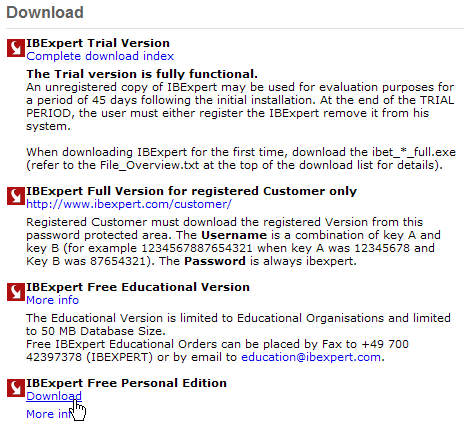
On choisira la version libre [Personal Edition]. Une fois celle-ci téléchargée et installée, on dispose d'un dossier analogue au suivant :

L'exécutable est [ibexpert.exe]. Un raccourci est normalement disponible dans le menu [Démarrer] :

Une fois lancé, IBExpert affiche la fenêtre suivante :

Utilisons l'option [Database/Create Database] pour créer une base de données :

peut être [local] ou [remote]. Ici notre serveur est sur la même machine que [IBExpert]. On choisit donc [local] | |
utiliser le bouton de type [dossier] du combo pour désigner le fichier de la base. Firebird met toute la base dans un unique fichier. C'est l'un de ses atouts. On transporte la base d'un poste à l'autre par simple copie du fichier. Le suffixe [.gdb] est ajouté automatiquement. | |
SYSDBA est l'administrateur par défaut des distributions actuelles de Firebird | |
masterkey est le mot de passe de l'administrateur SYSDBA des distributions actuelles de Firebird | |
le dialecte SQL à utiliser | |
si la case est cochée, IBExpert présentera un lien vers la base créée après avoir créé celle-ci |
Si en cliquant le bouton [OK] de création, vous obtenez l'avertissement suivant :

c'est que vous n'avez pas lancé Firebird. Lancez-le. On obtient une nouvelle fenêtre :

[IBExpert] est capable de gérer différents SGBD dérivés d'Interbase. Prendre la version de Firebird que vous avez installée |

Une fois cette nouvelle fenêtre validée par [Register], on a le résultat suivant :

Pour avoir accès à la base créée, il suffit de double-cliquer sur son lien. IBExpert expose alors une arborescence donnant accès aux propriétés de la base :

Créons une table. On clique droit sur [Tables] et on prend l'option [New Table]. On obtient la fenêtre de définition des propriétés de la table :
 |
Commençons par donner le nom [ARTICLES] à la table en utilisant la zone de saisie [1] :
 |
Utilisons la zone de saisie [2] pour définir une clé primaire [ID] :
 |
Un champ est fait clé primaire par un double-clic sur la zone [PK] (Primary Key) du champ. Ajoutons des champs avec le bouton [3] :

Tant qu'on n'a pas " compilé " notre définition, la table n'est pas créée. Utilisons le bouton [Compile] ci-dessus pour terminer la définition de la table. IBExpert prépare les requêtes SQL de génération de la table et demande confirmation :

De façon intéressante, IBExpert affiche les requêtes SQL qu'il a exécutées. Cela permet un apprentissage à la fois du langage SQL mais également du dialecte SQL éventuellement propriétaire utilisé. Le bouton [Commit] permet de valider la transaction en cours, [Rollback] de l'annuler. Ici on l'accepte par [Commit]. Ceci fait, IBExpert ajoute la table créée, à l'arborescence de notre base de données :

En double-cliquant sur la table, on a accès à ses propriétés :

Le panneau [Constraints] nous permet d'ajouter de nouvelles contraintes d'intégrité à la table. Ouvrons-le :

On retrouve la contrainte de clé primaire que nous avons créée. On peut ajouter d'autres contraintes :
- des clés étrangères [Foreign Keys]
- des contraintes d'intégrité de champs [Checks]
- des contraintes d'unicité de champs [Uniques]
Indiquons que :
- les champs [ID, PRIX, STOCKACTUEL, STOKMINIMUM] doivent être >0
- le champ [NOM] doit être non vide et unique
Ouvrons le panneau [Checks] et cliquons droit dans son espace de définition des contraintes pour ajouter une nouvelle contrainte :

Définissons les contraintes souhaitées :

On notera ci-dessus, que la contrainte [NOM<>''] utilise deux apostrophes et non des guillemets. Compilons ces contraintes avec le bouton [Compile] ci-dessus :

Là encore, IBExpert fait preuve de pédagogie en indiquant les requêtes SQL qu'il a exécutées. Passons maintenant au panneau [Constraints/Uniques] pour indiquer que le nom doit être unique :

Définissons la contrainte :

Compilons-la. Ceci fait, ouvrons le panneau [DDL] de la table [ARTICLES] :

Celui-ci donne le code SQL de génération de la table avec toutes ses contraintes. On peut sauvegarder ce code dans un script afin de le rejouer ultérieurement :
SET SQL DIALECT 3;
SET NAMES NONE;
CREATE TABLE ARTICLES (
ID INTEGER NOT NULL,
NOM VARCHAR(20) NOT NULL,
PRIX DOUBLE PRECISION NOT NULL,
STOCKACTUEL INTEGER NOT NULL,
STOCKMINIMUM INTEGER NOT NULL
);
ALTER TABLE ARTICLES ADD CONSTRAINT CHK_ID check (ID>0);
ALTER TABLE ARTICLES ADD CONSTRAINT CHK_PRIX check (PRIX>0);
ALTER TABLE ARTICLES ADD CONSTRAINT CHK_STOCKACTUEL check (STOCKACTUEL>0);
ALTER TABLE ARTICLES ADD CONSTRAINT CHK_STOCKMINIMUM check (STOCKMINIMUM>0);
ALTER TABLE ARTICLES ADD CONSTRAINT CHK_NOM check (NOM<>'');
ALTER TABLE ARTICLES ADD CONSTRAINT UNQ_NOM UNIQUE (NOM);
ALTER TABLE ARTICLES ADD CONSTRAINT PK_ARTICLES PRIMARY KEY (ID);
Il est maintenant temps de mettre des données dans la table [ARTICLES]. Pour cela, utilisons son panneau [Data] :

Les données sont entrées par un double-clic sur les champs de saisie de chaque ligne de la table. Une nouvelle ligne est ajoutée avec le bouton [+], une ligne supprimée avec le bouton [-]. Ces opérations se font dans une transaction qui est validée par le bouton [Commit Transaction]. Sans cette validation, les données seront perdues.
IBExpert permet d'émettre des requêtes SQL par l'option [Tools/SQL Editor] ou [F12]. On a alors accès à un éditeur de requêtes SQL évolué avec lequel on peut jouer des requêtes. Elles sont mémorisées et on peut ainsi revenir sur une requête déjà jouée. Voici un exemple :

On exécute la requête SQL avec le bouton [Execute] ci-dessus. On obtient le résultat suivant :

On arrêtera là nos démonstrations. Le couple IBExpert-Firebird s'avère excellent pour l'apprentissage des bases de données.
3.7. Installer et utiliser un pilote ODBC pour [Firebird]
3.8. Installer le pilote
Le lien [firebird-odbc-provider] de la page de téléchargements de [Firebird] (paragraphe 3.5) donne accès à un pilote ODBC. Une fois celui-ci installé, il apparaît dans la liste des pilotes ODBC installés.
3.9. Créer une source ODBC
- lancer l'outil [Démarrer -> Paramètres -> Outil de configuration -> Outils d'administration -> Sources de données ODBC] :

- on obtient la fenêtre suivante :

- ajoutons [Add] une nouvelle source de données système (panneau [System DSN]) qu'on associera à la base Firebird que nous avons créée dans le paragraphe précédent :

- il nous faut tout d'abord préciser le pilote ODBC à utiliser. Ci-dessus, nous choisissons le pilote pour Firebird puis nous faisons [Terminer]. L'assistant du pilote ODBC de Firebird prend alors la main :

- nous remplissons les différents champs :

le nom DSN de la source ODBC - peut être quelconque | |
le nom de la BD Firebird à exploiter - utiliser [Browse] pour désigner le fichier .gbd correspondant | |
identifiant à utiliser pour se connecter à la base | |
le mot de passe associé à cet identifiant |
Le bouton [Test connection] permet de vérifier la validité des informations que nous avons données. Avant de l'utiliser, lancer le SGBD [Firebird] :

- valider l'assistant ODBC, en faisant [OK] autant de fois que nécessaire
3.10. Tester la source ODBC
Il y a diverses façons de vérifier le bon fonctionnement d'une source ODBC. Nous allons ici utiliser Excel :

- utilisons l'option [Données -> Données externes -> Créer une requête] ci-dessus. Nous obtenons la première fenêtre d'un assistant de définition de la source de données. Le panneau [Bases de données] liste les sources ODBC actuellement définies sur la machine :

- choisissons la source ODBC [odbc-firebird-articles] que nous venons de créer et passons à l'étape suivante avec [OK] :

- cette fenêtre liste les tables et colonnes disponibles dans la source ODBC. Nous prenons toute la table :

- passons à l'étape suivante avec [Suivant] :

- cette étape nous permet de filtrer les données. Ici nous ne filtrons rien et passons à l'étape suivante :
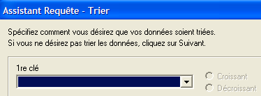
- cette étape nous permet de trier les données. Nous ne le faisons pas et passons à l'étape suivante :

- la dernière étape nous demande ce qu'on veut faire des données. Ici, nous les renvoyons vers Excel :

- ici, Excel demande où on veut mettre les données récupérées. On les met dans la feuille active à partir de la cellule A1. Les données sont alors récupérées dans la feuille Excel :

Il y a d'autres façons de tester la validité d'une source ODBC. On pourra par exemple utilliser la suite gratuite OpenOffice disponible à l'URL [http://www.openoffice.org]. Voici un exemple avec un texte OpenOffice :
 |  |
- une icône sur le côté gauche de la fenêtre d'OpenOffice donne accès aux sources de données. L'interface change alors pour introduire une zone de gestion des sources de données :

- une source de données est prédéfinie, la source [Bibliography]. Un clic droit sur la zone des sources de données nous permet d'en créer une nouvelle avec l'option [Gérer les sources de données] :

- un assistant [Gestion des sources de données] permet de créer des sources de données. Un clic droit sur la zone des sources de données nous permet d'en créer une nouvelle avec l'option [Nouvelle source de données] :

un nom quelconque. Ici on a repris le nom de la source ODBC | |
OpenOffice sait gérer différents types de BD via JDBC, ODBC ou directement (MySQL, Dbase, ...). Pour notre exemple, il faut choisir ODBC | |
le bouton à droite du champ de saisie nous donne accès à la liste des sources ODBC de la machine. Nous choisissons la source [odbc-firebird-articles] |
- nous passons au panneau [ODBC] pour y définir l'utilisateur sous l'identité duquel se fera la connexion :

le propriétaire de la source ODBC |
- on passe au panneau [Tables]. Le mot de passe est demandé. Ici c'est [masterkey] :

- on fait [OK]. La liste des tables de la source ODBC est alors présentée :

- on peut définir les tables qui seront présentées au document [OpenOffice]. Ici nous choisissons la table [ARTICLES] et nous faisons [OK]. La définition de la source de données est terminée. Elle apparaît alors dans la liste des sources de données du document actif :

- on peut avec la souris faire glisser la table [ARTICLES] ci-dessus dans le texte [OpenOffice] :

3.11. Chaîne de connexion d'une source ODBC Firebird
- lancer Visual Studio et demander l'affichage de l'explorateur de serveurs [Affichage/Explorateur de serveurs] :
 |
- cliquer droit sur [Connexion de données] et prendre l'option [Ajouter une connexion] :

- dans le panneau [Provider], indiquer qu'on veut utiliser une source ODBC (cf ci-dessus), puis passer au panneau [Connection] :

choisir la source ODBC dans le combo. Celle qui vient d'être créée doit apparaître. Au besoin, utiliser [Refresh] pour rafraîchir la liste des sources ODBC. | |
identifiant à utiliser pour se connecter à la base | |
le mot de passe associé à cet identifiant |
Là encore, un bouton [Test Connection] permet de vérifier la validité des informations :

- valider l'assistant par [OK]. La source de données apparaît alors dans la fenêtre [Explorateur de serveurs] de Visual Studio :

- en double-cliquant sur la table [ARTICLES], on a accès aux données de la table :

- si nous cliquons droit sur le lien [Firebird Server D:\temp\... ] et prenons l'option [Propriétés], nous avons accès aux propriétés de la connexion :

- la chaîne de connexion [ConnectString] est une propriété intéressante à connaître car le code .NET en a besoin pour ouvrir une connexion à la base. Ici cette chaîne de connexion est :
Provider=MSDASQL.1;Persist Security Info=False;User ID=SYSDBA;Data Source=demo-odbc-firebird;Extended Properties="DSN=demo-odbc-firebird;Driver=Firebird/InterBase(r) driver;Dbname=D:\temp\07-04-05\firebird\DBARTICLES.GDB;CHARSET=NONE;UID=SYSDBA"
Beaucoup d'éléments de cette chaîne de connexion ont des valeurs par défaut. On pourra se contenter de la chaîne de connexion suivante :
Cela termine notre présentation du pilote ODBC de [Firebird].
3.12. Où trouver le SGBD MSDE ?
MSDE est la version gratuite du SGBD SQL Server de Microsoft. On le trouve à l'URL [http://www.microsoft.com/sql/msde/downloads/download.asp] :
 |
 |  |
Télécharger le fichier d'installation puis installer le SGBD en double-cliquant sur l'exécutable téléchargé. Une fenêtre demande le dossier d'installation. Le titre est trompeur. Il s'agit d'un dossier temporaire qui pourra être supprimé ensuite :
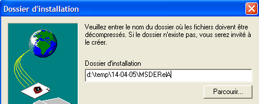 |  |
On lira attentivement le fichier [ReadmeMSDE2000A.htm]. Le programme d'installation est [setup.exe] ci-dessus. Il se lance en ligne de commande afin qu'on puisse lui passer des paramètres. Les principaux sont les suivants :
Description | |
| Spécifie un mot de passe renforcé à assigner au login administrateur sa. |
| Définit le nom de l'instance. Si INSTANCENAME n'est pas spécifié, le programme d'installation installe une instance par défaut. |
D'autres paramètres souvent utilisés pour personnaliser une installation sont :
Description | |
| Spécifie si l'instance acceptera les connexions réseau à partir d'applications exécutées sur d'autres ordinateurs. Par défaut, ou si vous spécifiez DISABLENTWORKPROTOCOL=1, le programme d'installation configure l'instance pour qu'elle refuse les connexions réseau. Spécifiez DISABLENETWORKPROTOCOLS=0 pour activer les connexions réseau. |
Spécifie que l'instance doit être installée en mode mixte, c'est-à-dire que l'instance prend en charge l'authentification Windows et l'authentification SQL pour les connexions | |
| Spécifie le dossier dans lequel le programme d'installation installe les bases de données système, les journaux d'erreurs et les scripts d'installation. La valeur spécifiée pour chemin_dossier_données doit se terminer par une barre oblique inversée (\). Pour une instance par défaut, le programme d'installation ajoute MSSQL\ à la valeur spécifiée. Pour une instance nommée, le programme d'installation ajoute MSSQL$NomInstance\, où NomInstance est la valeur spécifiée grâce au paramètre INSTANCENAME. Le programme d'installation crée trois dossiers à l'emplacement spécifié : un dossier Data, un dossier Log et un dossier Script. |
| Spécifie le dossier dans lequel le programme d'installation installe les fichiers exécutables de MSDE 2000. La valeur spécifiée pour chemin_dossier_exécutables doit se terminer par une barre oblique inversée (\). Pour une instance par défaut, le programme d'installation ajoute MSSQL\Binn à la valeur spécifiée. Pour une instance nommée, le programme d'installation ajoute MSSQL$NomInstance\Binn, où NomInstance est la valeur spécifiée grâce au paramètre INSTANCENAME. |
Après avoir lu les recommandations d'installation ci-dessus, nous nous plaçons dans le dossier où les fichiers d'installation ont été extraits et nous émettons la commande DOS suivante (utilisation du SGBD sans réseau) :
- INSTANCENAME="MSDE140405" - ce sera le nom de notre instance MSDE. On peut en installer plusieurs.
- SECURITYMODE=SQL - le SGBD fonctionnera en mode d'authentification mixte. Ainsi pourra-t-on se connecter à MSDE de deux façons :
- avec un compte administrateur windows
- avec un compte MSDE - un login et mot de passe sont alors demandés. Ce sera le mode à utiliser dans un programme qui se connecte à une base du SGBD.
- SAPWD="azerty" - ce sera le mot de passe de l'utilisateur sa du SGBD. L'utilisateur [sa] a les droits d'administration sur le SGBD.
Pour une utilisation du SGBD en réseau, on aurait émis la commande suivante :
Le programme d'installation est minimaliste et se termine sans rien dire... On peut cependant voir que le SGBD a été installé via l'option [Menu Démarrer -> Panneau de configuration -> Ajouter et supprimer des programmes] :
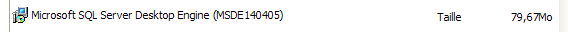
L'installation se fait normalement dans C:\Program Files\Microsoft SQL Server\MSSQL$nomInstance :
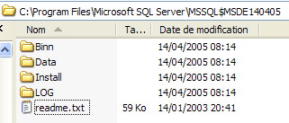 |  |
Dans le dossier [LOG] du dossier d'installation, on trouve le fichier de logs de la phase d'intallation du SGBD. On y trouve une information importante : le nom de l'instance MSDE :
Il est important de connaître ce nom car tous les clients du SGBD en auront besoin. En l'absence de ces logs, on peut retrouver le nom d'un serveur MSDE qui est [machine_windows\nom_instance_MSDE]. Le nom de la machine est disponible à plusieurs endroits. Par exemple :
- cliquez droit sur [poste de travail] sur le bureau, prenez l'option [propriétés], puis le panneau [Nom de l'ordinateur] :

On ne sait toujours pas comment lancer le serveur MSDE. Un raccourci a normalement été placé dans [Démarrer/Démarrage].

Si on regarde les propriétés de ce raccourci, on trouve que la cible est la suivante :
Dans le dossier [ C:\Program Files\Microsoft SQL Server], il existe des sous-dossiers :
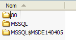
- MSSQL$MSDE140405 est le dossier de l'intance MSDE que nous venons d'installer.
- MSSQL est le dossier d'une précédente intance MSDE. Parce qu'elle n'a pas de nom, on l'appelle l'instance par défaut.
- le dossier [80] est un dossier commun aux différentes instances de MSDE installées. La cible [sqlmangr.exe] du raccourci qui lance une instance de MSDE est dans le dossier [ 80\Tools\Binn].
Lançons MSDE via le raccourci de [Démarrer -> Programmes -> Démarrage]. Il ne se passe quasiment rien si ce n'est qu'une icône s'est installée dans la barre d'état :  | Double-cliquons sur cette icône :  |
Le serveur MSDE proposé ici est le serveur par défaut [PORTABLE1_TAHE] présent sur la machine. Rappelons que le serveur MSDE que nous avons installé s'appelle [PORTABLE1_TAHE\MSDE140405]. Nous changeons le nom du serveur dans le champ approprié :  | Si tout se passe bien, l'instance [MSDE140405] doit être lancée :  |
On peut faire une première vérification. Dans le même dossier que celui où se trouve [sqlmangr.exe], on trouve un client console [osql.exe] qui permet de se connecter à un serveur MSDE et d'émettre des commandes SQL. Nous avons lors de l'installation attribué le mot de passe [azerty] à l'administrateur [sa] de notre serveur MSDE. Grâce au client console, nous allons nous connecter sur le serveur nouvellement installé. Si on exécute la commande [osql -?] la liste des paramètres possibles est affichée :
C:\Program Files\Microsoft SQL Server\80\Tools\Binn>osql -?
utilisation : osql
[-U ID de connexion]
[-P mot de passe]
[-S serveur]
[-H nom de l'hôte]
[-E connexion approuvée]
[-d utiliser le nom de la base de données]
[-l limite du temps de connexion]
[-t limite du temps de requête]
[-h en-têtes]
[-s séparateur de colonnes]
[-w largeur de colonne]
[-a taille du paquet]
[-e entrée d'écho]
[-I Activer les identificateurs marqués]
[-L liste des serveurs]
[-c fin de cmd] [-D nom ODBC DSN]
[-q "requête cmdline"]
[-Q "requête cmdline" et quitter]
[-n supprimer la numérotation]
[-m niveau d'erreur]
[-r msgs vers stderr]
[-V severitylevel]
[-i fichier d'entrée]
[-o fichier de sortie]
[-p imprimer les statistiques] [-b abandon du lot d'instruction après erreur]
[-X[1] désactive les commandes [et quitte avec un avertissement]]
[-O utiliser le comportement Old ISQL désactive les éléments suivants]
<EOF> traitement par lot d'instructions
Mise à l'échelle automatique de la largeur de la console
Messages larges
niveau d'erreur par défaut de -1 au lieu de 1
[-? description de la syntaxe]
Lançons le serveur [MSDE140405] comme indiqué plus haut, puis dans un fenêtre dos, utilisons [osql] pour nous connecter au serveur [portable1_tahe\msde140405] sous l'identité [sa, azerty] :
C:\Program Files\Microsoft SQL Server\80\Tools\Binn>OSQL.EXE -U sa -S portable1_tahe\msde140405 -P azerty
1>
Le prompt [1>] indique que [osql] attend une commande. Nous sommes bien connectés. Pour utiliser correctement [osql], il faut consulter la documentation de MSDE. Il en existe en différents formats (pdf, htmlhelp, ...). Cette documentation est très volumineuse. On préfèrera en général utiliser un client graphique pour travailler avec une base MSDE. C'est ce qui est proposé un peu plus loin. Pour quitter [osql], on utilise la commande [exit] :
Nous allons voir maintenant comment créer des bases dans le serveur MSDE nouvellement installé. Auparavant, nous présentons rapidement un outil [MSDE Manager] permettant de modifier le mode d'authentification d'un serveur MSDE. En effet, si on installe un tel serveur en prenant les options d'installation par défaut, le mode d'authentification du serveur est de type [authentification windows]. Ce type d'authentification autorise uniquement des utlisateurs identifiés sur la machine windows (éventuellement via un domaine). Pour un programme VB.NET qui veut se connecter à une base pour en exploiter le contenu, ce mode s'avère peu pratique. C'est pire pour les applications Java qui accèdent au SGBD via un pilote JDBC. On préfèrera alors l'authentification mixte qui en plus de l'autentification précédente accepte des couples (login, mot de passe) déclarés dans le SGBD. L'outil [MSDE Manager] permet de faire cette opération.
3.13. Où trouver MSDE Manager ?
[MSDE Manager] est un outil d'administration du SGBD MSDE. On le trouve à l'URL [http://www.valesoftware.com/].
Nous téléchargeons la version gratuite en suivant le lien ci-dessus :
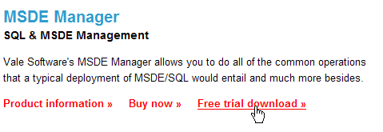

La version d'essai a une courte durée de vie. Cela convient car nous ne l'utiliserons que pour une unique action bien précise. Nous téléchargeons et installons le produit. Un raccourci est placé sur le bureau. Nous l'utilisons pour lancer MSDE Manager. Passées les premières fenêtres, nous arrivons à celle-ci :

- lancez le serveur MSDE140405
- vous devez être connecté sur la machine windows en tant qu'administrateur
- cliquez droit sur le lien [SQL Server Group] et prenez l'option [New SQL Server Registration] :


On obtient la page de propriétés suivante :
 |
portable1_tahe\msde140405 - nom de l'instance MSDE à laquelle vous voulez vous connecter | |
Windows authentification - ce mode est toujours disponible et permet à un administrateur de la machine windows de se connecter au serveur MSDE | |
sélectionner l'unique groupe de serveurs présenté [SQL Server Group] |
Une fois [OK] cliqué, l'arborescence des propriétés du serveur MSDE140405 est affichée :

Nous pourrions commencer à créer des bases. Nous n'allons pas le faire car nous utiliserons un autre produit, clône du produit IBExpert déjà étudié. Nous allons simplement changer le mode d'authentification de MSDE. Cliquons droit sur le serveur MSDE140405 ci-dessus et prenons l'option [Design] :
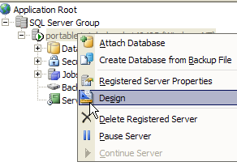
Nous obtenons la fenêtre d'informations suivante :

Le panneau [General] donne des informations sur le serveur MSDE auquel on est connecté. La page [Security] est celle qui nous intéresse :

Il faut s'assurer ici, que le mode d'authentification de MSDE est bien [SQL Server and Windows]. Ainsi pourra-t-on se connecter à MSDE de deux façons :
- avec un compte administrateur windows - c'est ce qui a été fait ici
- avec un compte MSDE - un login et mot de passe sont alors demandés. Ce sera le mode à utiliser dans un programme qui se connecte à une base du SGBD.
Nous validons ce choix et nous quittons MSDE Manager. Nous n'en aurons plus besoin. Pour créer des bases MSDE, nous allons utiliser un autre outil : EMS MS SQL Manager.
3.14. Où trouver EMS MS SQL Manager ?
EMS MS SQL Manager est un outil graphique permettant de travailler avec le SGBD Microsoft SQL Server et donc MSDE. Il est très semblable à l'outil IB-Expert décrit précédemment. Il est disponible à l'URL [http://sqlmanager.net/] (avril 2005) :

Le site offre des gestionnaires d'administration pour de nombreux SGBD. Suivre le lien [MS SQL Manager] :
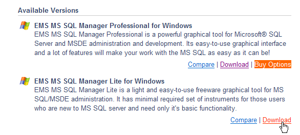
Ci-dessus, nous choisissons la version allégée du produit. La télécharger et l'installer. On dispose d'un dossier analogue au suivant :

L'exécutable est [MsManager.exe]. Un raccourci est normalement disponible dans le menu [Démarrer] :

Une fois lancé, MS SQL Manager affiche la fenêtre suivante :

Commençons par enregistrer le serveur MSDE sur lequel on veut travailler avec l'option [Database/Register Host] :
 |
Commentaires :
- étape 1 - comme il a été dit, MSDE accepte deux modes d'authentification : windows et SQL Server. En mode [windows], ce sont les comptes de la machine windows qui sont utilisés. En mode [SQL Server], ce sont les comptes du SGBD qui sont utilisés. [SQL Server] peut travailler en mode [Windows] ou en mode mixte [Windows, SQL Server]. Le mode d'authentification [Windows] existe toujours. Le mode d'authentification mixte n'est lui pas toujours actif. Nous avons vu comment l'activer avec MSDE Manager. Ci-dessus, la connexion s'est faite avec un compte administrateur.
- étape 2 - l'authentification réussie, les bases par défaut de MSDE sont proposées. Ci-dessus, elles ont été toutes sélectionnées.
 |
Commentaires :
- étape 3 : des options d'administration des bases choisies peuvent être sélectionnées. Ici, les options proposées par défaut ont été conservées.
- étape 4 : nous enregistrons le serveur MSDE avec ele bouton [Register]
Le serveur MSDE apparaît alors dans l'explorateur de bases :

Utilisons l'option [Database/Create Database] pour créer une base de données :
 |
étape 2 :
Lorsqu'apparaît cette page d'informations, la base [dbarticles] a été créée. On peut s'en assurer avec le bouton [Test Connect]. Dans le champ [Database alias] on peut mettre ce que l'on veut. Ici on a indiqué :
- le nom de la base
- le nom du serveur MSDE sur lequel elle se trouve
- l'utilisateur [admarticles] qui sera propriétaire de cette base et son mot de passe [mdparticles]. Ce utilisateur n'a pas encore été créé mais le sera prochainement.
étape 3 :
- avec le bouton [Register] nous enregistrons la nouvelle base dans [MS SQL Server ]. Après l'enregistrement, la base [admarticles] est présente dans la liste des bases. Un double-clic dessus fait afficher l'arborescence de ses propriétés.
 |  |
Créons un nouveau login de connexion qui sera administrateur de la base [admarticles].
- choisir l'option [Tools/Login manager] :

- on constate que deux logins sont déjà définis :
- [BUILTIN\Administrateurs] : ce login utilise une authentification windows. Il représente les administrateurs de la machine windows sur laquelle se trouve le serveur MSDE
- sa : ce login utilise une authentification SQL. C'est par défaut l'administrateur du serveur MSDE. On rappelle qu'ici, par paramétrage à l'installation du SGBD MSDE, son mot de passe est [azerty].
- cliquons droit sur la zone des logins et ajoutons un nouveau login :
 |
- une feuille de saisies apparaît où nous définissons les caractéristiques du nouveau login :

- Login Name : admarticles
- Password : mdparticles
- une fois le bouton [OK] pressé, MS Manager nous présente les requêtes SQL qu'l va exécuter :

Le langage SQL présenté ci-dessus est Transact-SQL, le langage SQL de MSDE. Nous demandons l'exécution de ce code par [OK]
- le nouveau login est inséré dans la liste des logins :

- dans la fenêtre de propriétés de la base [dbarticles], cliquons droit sur [users] afin de créer un utilisateur avec des droits sur la base [dbarticles] :

- on obtient alors la fenêtre suivante :

- dans le combo [Login] on a la liste des logins existants. On choisit le login [admarticles].
- dans [Name] on indique un nom d'utilisateur. Plusieurs utilisateurs peuvent être associés au même login. Aussi dans MSDE, la création d'un utilisateur passe-t-elle d'abord par la création d'un login. Le panneau [User] devient le suivant :
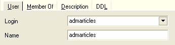
- passons maintenant au panneau [Member Of] qui va nous permettre de définir les droits de notre utilisateur :

- je ne suis pas un utilisateur habituel de MSDE et j'ignore la signification exacte de chacun des rôles proposés dans la fenêtre de gauche. Le rôle [db_owner] est tentant (owner=propriétaire). On le choisit donc pour notre utilisateur [admarticles] :

- nous validons nos choix par le bouton [Compile] ci-dessus. Les requêtes SQL présentées à l'exécution sont les suivantes :

- nous les compilons par [OK]. Nous avons maintenant un utilisateur de la base [dbarticles] :

- Créons maintenant une table. On clique droit sur [Tables] et on prend l'option [New Table]. On obtient la fenêtre de définition des propriétés de la table :

- Commençons par donner le nom [ARTICLES] à la table en utilisant la zone de saisie [Table Name]. Passons ensuite au panneau [Fields] :

- définissons les champs suivants :

Tant qu'on n'a pas " compilé " notre définition, la table n'est pas créée. Utilisons le bouton [Compile] ci-dessus pour terminer la définition de la table. [MS SQL Manager] prépare les requêtes SQL de génération de la table et demande confirmation :

De façon intéressante, [MS SQL Manager] affiche les requêtes SQL qu'il a exécutées. Cela permet un apprentissage à la fois du langage Transact-SQL. Le bouton [Commit] permet de valider la transaction en cours, [Rollback] de l'annuler. Ici on l'accepte par [Commit]. Ceci fait, [MS SQL Manager] ajoute la table créée à l'arborescence de notre base de données :

En double-cliquant sur la table, on a accès à ses propriétés :
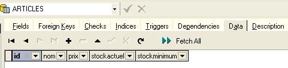
Le panneau [Checks] nous permet d'ajouter de nouvelles contraintes d'intégrité à la table. Pour la table [ARTICLES] nous allons créer les contraintes suivantes :
- les champs [ID, PRIX, STOCKACTUEL, STOKMINIMUM] doivent être >=0
- le champ [NOM] doit être non vide
Dans le panneau [Checks], cliquons droit sur sa zone vierge pour ajouter une nouvelle contrainte [New check] :

- La feuille d'édition des contraintes se présente comme suit :

Name : nom de la contrainte
Table : table sur laquelle s'exerce la contrainte
Définition : expression de la contrainte
La contrainte est compilée par le bouton [Compile] ci-dessus.
- de nouveau [MS SQL Manager] présente les commandes SQL exécutées :

- on les valide avec le bouton [Commit] (non représenté).Si on revient sur le panneau [Checks] de la table [ARTICLES], la nouvelle contrainte apparaît :

- nous définissons de même les autres contraintes pour obtenir finalement la liste suivante :
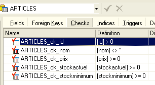
Ceci fait, ouvrons le panneau [DDL] de la table [ARTICLES] :

Celui-ci donne le code Transact-SQL de génération de la table avec toutes ses contraintes. On peut sauvegarder ce code dans un script afin de le rejouer ultérieurement :
CREATE TABLE [ARTICLES] (
[id] int NOT NULL,
[nom] varchar(20) COLLATE French_CI_AS NOT NULL,
[prix] float(53) NOT NULL,
[stockactuel] int NOT NULL,
[stockminimum] int NOT NULL,
CONSTRAINT [ARTICLES_uq] UNIQUE ([nom]),
PRIMARY KEY ([id]),
CONSTRAINT [ARTICLES_ck_id] CHECK ([id] > 0),
CONSTRAINT [ARTICLES_ck_nom] CHECK ([nom] <> ''),
CONSTRAINT [ARTICLES_ck_prix] CHECK ([prix] >= 0),
CONSTRAINT [ARTICLES_ck_stockactuel] CHECK ([stockactuel] >= 0),
CONSTRAINT [ARTICLES_ck_stockminimum] CHECK ([stockminimum] >= 0)
)
ON [PRIMARY]
GO
Il est maintenant temps de mettre quelques données dans la table [ARTICLES]. Pour cela, utilisons son panneau [Data] :

Le bouton [+] permet d'ajouter une ligne, le bouton [-] d'en supprimer. Les données sont entrées par simple saisie sur les champs de saisie de chaque ligne de la table. Une ligne est validée par le bouton [Post Edit] ci-dessous :
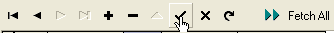
Créons deux articles :

[MS SQL Manager] permet d'émettre des requêtes SQL par l'option [Tools/Show SQL Editor] ou [F12]. On a alors accès à un éditeur de requêtes SQL évolué avec lequel on peut jouer des requêtes. Elles sont mémorisées et on peut ainsi revenir sur une requête déjà jouée. Voici un exemple :

On exécute la requête SQL avec le bouton [Execute] ci-dessus. On obtient le résultat suivant :

On arrêtera là nos démonstrations. Le couple [MS SQL Manager - MSDE], à l'instar du couple [IBExpert - Firebird], s'avère lui aussi excellent pour l'apprentissage des bases de données.
3.15. Créer une source ODBC [MSDE]
Le pilote ODBC pour SQL Server est normalement installé par défaut sur les machines windows.
- lancer l'outil [Démarrer -> Paramètres -> Outil de configuration -> Outils d'administration -> Sources de données ODBC] :
- on obtient la fenêtre suivante :
- ajoutons [Add] une nouvelle source de données système (panneau [System DSN]) qu'on associera à la base MSDE que nous avons créée dans le paragraphe précédent :
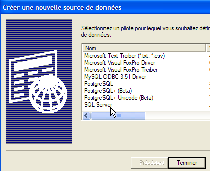
- il nous faut tout d'abord préciser le pilote ODBC à utiliser. Ci-dessus, nous choisissons le pilote pour [SQL Server] puis nous faisons [Terminer]. L'assistant du pilote ODBC de [SQL Server] prend alors la main :
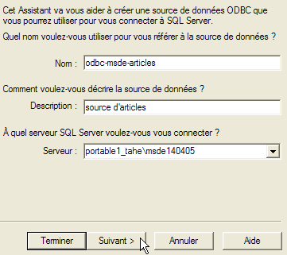
- nous remplissons les différents champs :
le nom de la source ODBC - peut être quelconque | |
peut être quelconque | |
nom du serveur MSDE détenant les données de la source ODBC |
- on fait [Suivant] pour donner de nouvelles informations :
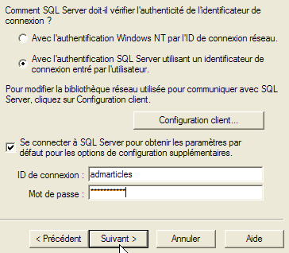
- nous remplissons les différents champs :
on indique qu'on se connectera à la source de données ODBC avec un nom d'utilisateur déclaré dans le serveur MSDE | |
login utilisateur | |
mot de passe utilisateur |
- on remarquera que nous utilisons pour la première fois l'utilisateur (admarticles, mdparticles) créé dans un paragraphe précédent. De nouveau nous faisons [Suivant] pour obtenir la nouvelle feuille suivante :

- nous remplissons les différents champs :
nous sélectionnons la base [dbarticles] comme base par défaut pour l'utilisateur [admarticles] |
- nous faisons [Suivant] pour obtenir la nouvelle feuille suivante :
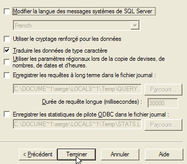
- nous acceptons les valeurs par défaut et faisons [Terminer]. Un résumé des caractéristiques de la source ODBC qui va être créée est donné :

- le bouton [Tester la source de données] nous donne une chance de vérifier la validité de nos informations. Vérifiez que MSDE est lancé puis testez la connexion :

- nous sommes maintenant certains que le couple [admarticles, mdparticles] est reconnu.
Pour des tests complémentaires, le lecteur poura suivre la procédure expliquée au paragraphe 3.10.
3.16. Chaîne de connexion à une base MSDE
- lancer Visual Studio et demander l'affichage de l'explorateur de serveurs [Affichage/Explorateur de serveurs] :
|
- cliquer droit sur [Connexion de données] et prendre l'option [Ajouter une connexion] :
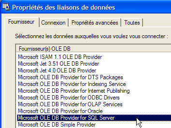
- dans le panneau [Provider], indiquer qu'on veut utiliser une source SQL Server, puis passer au panneau [Connection]. Noter qu'ici on ne passe pas par un pilote ODBC.
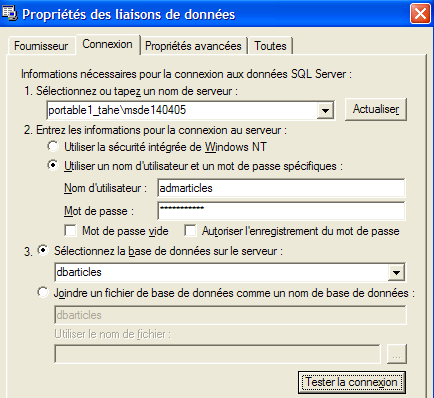
nom du serveur MSDE auquel on se connecte | |
identifiant à utiliser pour se connecter à la base | |
le mot de passe associé à cet identifiant | |
la base de données avec laquelle on veut travailler |
Un bouton [Tester la connexion] permet de vérifier la validité des informations :

- valider l'assistant par [OK]. Assez curieusement, une nouvelle fenêtre demande les caractéristiques de la connexion :
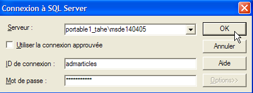
- on les redonne et on fait [OK]. La source de données apparaît alors dans la fenêtre [Explorateur de serveurs] de Visual Studio :

- en double-cliquant sur la table [ARTICLES], on a accès aux données de la table :

- si nous cliquons droit sur le lien [portable1_tahe\msde140405.dbarticles.admarticles] du panneau [Explorateur de serveurs] et prenons l'option [Propriétés], nous avons accès aux propriétés de la connexion :

- la chaîne de connexion [ConnectString] est une propriété intéressante à connaître car le code .NET en a besoin pour ouvrir une connexion à la base. Ici cette chaîne de connexion est :
Provider=SQLOLEDB.1;Persist Security Info=False;User ID=admarticles;Initial Catalog=dbarticles;Data Source=portable1_tahe\msde140405;Use Procedure for Prepare=1;Auto Translate=True;Packet Size=4096;Workstation ID=PORTABLE1_TAHE;Use Encryption for Data=False;Tag with column collation when possible=False
Beaucoup d'éléments de cette chaîne de connexion ont des valeurs par défaut. On pourra se contenter de la chaîne de connexion suivante :